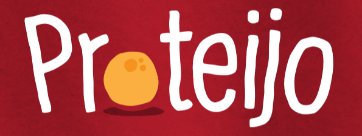

|
01
Direção Visual
Calor de cozinha brasileira, cuidado de marca premium.A Proteijo nasce do universo do pão de queijo: sabor caseiro, mesa de família e afeto. A interface traduz isso em uma experiência quente, clara e apetitosa — artesanal no espírito, mas organizada e profissional na execução. A logo já carrega toda a personalidade; o sistema existe para dar clareza, hierarquia e conversão. 🤲
AcolhimentoTons creme, cantos arredondados orgânicos e respiro generoso. A página deve dar a sensação de receber alguém em casa. ✋
Feito à mãoDetalhes manuais (acentos em Caveat, selos artesanais) entram com parcimônia para lembrar a origem caseira, sem virar bagunça. 🔥
ApetiteFotografia quente e próxima é a estrela. O vermelho é energia pontual; o amarelo-queijo é sabor. Tudo serve à fome. ✅
ConfiançaComposições simples e escaneáveis, contraste correto e CTAs claros. Bonito porque é bem cuidado — não porque é enfeitado. A marca deve parecer
Nunca deve parecer
Palavras-chave visuais
Quente · Caseiro · Claro · Apetitoso · Limpo · Brasileiro · Cuidado · Direto Nível de sofisticação: artesanal premium — o equilíbrio fica em 60% calor afetivo / 40% rigor profissional. Amigável e comercial, sem exagero decorativo.
02
Paleta de Cores
Extraída direto da logo e da embalagem.Vermelho como energia e identidade, amarelo-queijo como sabor e calor, e uma base creme que mantém a leitura confortável. O vermelho é usado com intenção — nunca em grandes blocos de texto ou áreas extensas. Proporção de uso recomendada na página. A base é sempre clara; vermelho e queijo são acentos. Texto branco sobre vermelho
Contraste 4.5:1 — só botões e títulos bold. Vinho sobre queijo
Combinação da própria logo. Alto apetite. Marrom sobre creme
Par padrão de leitura — 11:1, confortável. Queijo sobre vinho
Destaque quente em blocos escuros.
03
Tipografia
A logo tem a personalidade. A tipografia traz a clareza.Duas famílias de trabalho e um toque manual. Nada infantil, nada decorativo demais — o objetivo é leitura confortável com calor. Títulos
Ag
Bricolage Grotesque
Caráter contemporâneo e caloroso sem ser corporativo. Pesos 600–800 para títulos e números. AaBbCcGg 0123456789
Corpo / UI
Ag
Mulish
Humanista, limpa e amigável. Excelente legibilidade no mobile. Pesos 400–800. AaBbCcGg 0123456789
Acento manual
Ag
Caveat — uso pontual
Eco do traço manual da logo. Só em selos, frases curtas e legendas afetivas. Nunca em parágrafos. feito em casa, com carinho
Fallback seguro:
04
Grid e Layout
Mobile-first, escaneável, simples de implementar.Container máximo de 1140px centralizado. Conteúdo de leitura limitado a ~65ch. Layout comercial e direto — nada de composições difíceis. Desktop≥ 1024px
12 colunas · gutter 32px · margens 40px · container 1140px. Tablet640–1024px
8 colunas · gutter 24px · margens 24px. Cards em 2 colunas. Mobile< 640px
4 colunas · gutter 16px · margens 20px. Tudo empilha em coluna única. 1140px largura máx. do conteúdo ~65ch medida ideal de leitura 96–128px espaço entre seções (desktop) 56–72px espaço entre seções (mobile)
05
Sistema de Espaçamento
Escala de 4px. Sempre múltiplos.Espaçamento generoso é o que dá a sensação de cuidado e respiro. Use sempre tokens da escala — nunca valores soltos. 4 · xsícone↔texto, ajustes finos
8 · smentre chips, gap de tags
12 · mdtítulo↔texto, gap interno
16 · lggap de grid, padding mobile
24 · xlpadding de card, gap de cards
32 · 2xlgutter desktop, padding seção mobile
48 · 3xlblocos internos de seção
64 · 4xlpadding seção tablet
96 · 5xlpadding vertical de seção desktop
Padding de seção 96px (desktop) · 64px (tablet) · 56px (mobile), vertical. Padding de card 24–28px (desktop) · 20px (mobile). Gap de grid 24px cards · 16px mobile · 32px colunas desktop. Espaço de CTA 32–48px acima do botão; 12px entre botões irmãos.
06
Componentes Base
Calorosos e comerciais — sem excesso de sombra ou efeito.Cantos arredondados orgânicos, bordas-hairline quentes e sombras suaves. Passe o mouse nos exemplos abaixo para ver os estados. Botões
Primário — vermelho sólido + texto branco. Hover escurece e sobe 2px. Ação principal de cada bloco.
Secundário — contorno vermelho sobre branco. Ação alternativa, nunca compete com o primário.
Ghost / texto — só para ações terciárias (ler mais, ver detalhes).
Estados — foco: anel
outline 3px var(--queijo). Disabled: bege, sem sombra. Altura mín. 48px.Card
🧀
Feito com queijo brancoMuuuuito queijo Minas frescal de verdade em cada bolinha. Raio 18px · borda hairline · hover sobe 4px e aquece a borda. Sombra só no hover. Tags & Badges
Sem glúten
Fonte de proteínas
Artesanal
Novo
Pílula, sempre. Selo de produto = queijo/vinho. Badge informativo = creme. Nunca depender só da cor — sempre com rótulo. Ícones
🌾
💪
❄️
⏱️
Estilo: linha arredondada, traço 1.75–2px, em cápsula quente. Coerentes em peso e tamanho (24px num quadro de 46px). Bloco de produto
Bloco de benefícios
💪 Fonte de proteínas e cálcio Nutritivo de verdade, para criar filhos fortes. 🌾 Sem glúten Para a família toda aproveitar sem preocupação. 🏠 Artesanal congelado Feito à mão, fresco quando você quiser. Ícone em cápsula + título + descrição curta. Lista vertical no mobile, grid 2–3 col no desktop. Bloco de diferenciais
+queijo muuuuito queijo branco 0 glúten para todos à mesa min. pronto rapidinho à mão receita artesanal Fundo vinho dá contraste e respiro entre seções claras. Números/destaques em amarelo-queijo. Bloco lojistas / parceiros
Quer vender Proteijo?Margem saudável, giro rápido e um produto que a clientela já ama. Seja um ponto de venda. Tom B2B mais sóbrio (vinho) mas ainda quente. CTA distinto do consumidor final. Prova social
★★★★★
"Melhor pão de queijo congelado que já comi. Vai sempre na cesta.” M Mariana S. cliente desde 2022 Estrelas em queijo, depoimento curto, avatar com inicial. Carrossel no mobile, grid no desktop. FAQ (acordeão)
Como preparo o pão de queijo?+Direto do congelador ao forno ou airfryer. Fica douradinho em poucos minutos, sem descongelar. É realmente sem glúten?+Sim. Feito com polvilho e muito queijo branco, naturalmente sem glúten. Itens em cartão creme, abre um por vez. Ícone +/− indica estado (não só cor). Área de clique alta. Header
ProdutoBenefíciosLojistas
Fundo creme translúcido com leve blur ao rolar. Logo à esquerda, CTA à direita. Vira menu hambúrguer no mobile. Footer
 Pão de queijo feito com muuuuito queijo branco. #CriandoFilhosFortes MarcaProdutoLojistas ContatoWhatsAppInstagram Bloco escuro vinho fecha a página com calor. Logo em versão clara, links em queijo nos títulos. CTA final
07
Sistema de CTA
Claros, diretos e fáceis de encontrar.Um objetivo por seção. O CTA principal é sempre vermelho sólido; o secundário nunca compete com ele. A página repete o convite em pontos-chave.
CTA primário
Consumidor final"Pedir no WhatsApp" / "Onde comprar". Vermelho sólido, texto branco bold, pílula. Sempre a ação mais visível da tela.
CTA secundário
Ação de apoio"Ver benefícios", "Conhecer a marca". Contorno vermelho ou ghost. Acompanha o primário sem roubar atenção.
CTA lojista
B2B / parceiros"Quero ser parceiro". Vinho sólido para diferenciar do consumidor, mantendo o calor da marca. Onde os CTAs aparecem
Hierarquia: em qualquer tela, só um botão vermelho sólido por vez. Demais ações em contorno/ghost. Botão fixo de WhatsApp
💬
Recomendado. Flutuante no canto inferior direito, ~56–64px, sempre acessível no mobile. Não cobre CTAs nem texto; respeita safe-area. Mobile: CTA primário ocupa largura total (ou quase), altura mín. 48px, fixo no rodapé quando a seção for longa. Texto curto e verbo de ação ("Pedir", "Comprar", "Falar agora").
08
Imagens e Elementos Visuais
A fotografia é a estrela. Quente, próxima, apetitosa.Fundos quentes (pêssego, creme, amarelo), luz natural e macro do produto. Nada de banco de imagem genérico — a própria marca já tem o material certo. Tratamento
Pessoas & família
Mãos partindo o pão de queijo, mesa compartilhada, momentos reais — #momentosincríveis. Sempre genuíno, nunca posado em estúdio frio. Diversidade brasileira. Bordas & sombras
Borda hairline quente (#E7D6BC). Sombra suave e morna — nunca cinza-azulada. Profundidade discreta: a página respira, não pesa. Elementos gráficos da marca
Bolinha-queijo (da logo) Círculo vermelho de apoio Pratinho / base vinho Use os formatos orgânicos da logo (a bolinha de queijo, a sombra-pratinho) como detalhes pontuais: marcadores de lista, separadores, formas decorativas atrás de blocos. Sem ilustrações novas nem SVGs elaborados — o sistema é fotográfico.
09
Motion System
Leve, suave, a serviço do conteúdo.Animações curtas que dão vida sem distrair. Toda a página respeita Entrada / revealFade + subida de 18px ao entrar na viewport. 600ms, ease suave, uma vez só. HoverBotões e cards sobem 2–4px e ganham sombra. 160–240ms. MicrointeraçõesLoading shimmer, +/− do FAQ, contadores. Sutis e funcionais. Durações micro 120–160ms · hover 200–240ms · reveal 500–600ms. Nada acima de 600ms. Easing cubic-bezier(.2,.7,.2,1) — saída macia, sensação acolhedora. Evite linear e bounce. Reduced motion Com a preferência ativa: sem transform/animação, conteúdo aparece estático. Acessível por padrão.
10
Acessibilidade
WCAG AA como piso, não como meta.Acolher é incluir. Toda a interface segue contraste, foco visível e navegação por teclado. Contraste mínimo
Foco visívelAnel de foco em queijo, 3px, deslocado 2px. Nunca remover outline sem substituir. Área clicávelAlvos de toque ≥ 44×44px. Espaço entre botões irmãos ≥ 8px. Links de texto com padding generoso no mobile. Cor + rótuloNunca comunicar só por cor. Selos têm texto/ícone; estados (FAQ +/−, erro/sucesso) usam forma além da cor. Semântica & tecladoHierarquia h1→h6 correta, landmarks (header/main/footer), foco em ordem lógica, skip-link, Leitura no mobileCorpo ≥ 16px, line-height ≥ 1.55, medida ≤ 65ch. Zoom permitido (sem
11
Regras Responsivas
Mobile é prioridade — não adaptação.Projete primeiro a coluna única e expanda. Cada elemento tem um comportamento claro em cada breakpoint. Espaçamentos respiram com a tela: padding de seção 56px (mobile) → 64px (tablet) → 96px (desktop). Nunca espremer o conteúdo nas bordas — margem mínima de 20px no mobile.
12
Tokens de Design
Prontos para implementar.CSS custom properties para colar direto no :root { /* Cores — marca */ --red: #EA1C24; /* identidade, CTA primário */ --red-700: #C2151B; /* hover/pressed do vermelho */ --vinho: #6B1815; /* contraste, blocos escuros */ --queijo: #FAAD3D; /* sabor, selos, destaques */ --queijo-600: #F2962E; /* laranja profundo (faixa) */ --queijo-50: #FBF1DD; /* wash quente claro */ /* Cores — base & texto */ --creme: #FBF4E9; /* fundo principal */ --card: #FFFDF8; /* fundo de cards */ --bege: #F3E5CE; /* áreas secundárias */ --line: #E7D6BC; /* bordas hairline */ --marrom: #3A2A22; /* texto principal */ --marrom-2: #6E5A4E; /* texto secundário */ /* Tipografia */ --font-title: 'Bricolage Grotesque', system-ui, sans-serif; --font-body: 'Mulish', system-ui, sans-serif; --font-hand: 'Caveat', cursive; /* Espaçamento (base 4px) */ --s-1:4px; --s-2:8px; --s-3:12px; --s-4:16px; --s-5:24px; --s-6:32px; --s-7:48px; --s-8:64px; --s-9:96px; --s-10:128px; /* Raio */ --r-sm:8px; --r-md:14px; --r-lg:22px; --r-pill:999px; /* Sombras (quentes) */ --sh-sm: 0 1px 2px rgba(58,27,20,.06); --sh-md: 0 10px 26px rgba(58,27,20,.08); --sh-lg: 0 20px 50px rgba(107,24,21,.12); /* Transições */ --ease: cubic-bezier(.2,.7,.2,1); --t-micro:150ms; --t-hover:220ms; --t-reveal:600ms; /* Breakpoints */ --bp-mobile:640px; --bp-tablet:1024px; --bp-max:1140px; /* z-index */ --z-header:100; --z-fab:200; --z-modal:300; }
13
Aplicação na Landing Page
O sistema, seção por seção.Como cada parte da página usa cor, tipografia, imagem e CTA. A copy final (GitHub) define os textos; aqui fica a orientação visual de cada bloco. 01
HeroFundo creme, H1 em vinho, subtítulo em marrom-2. Foto macro do produto (puxa-queijo ou tigela). CTA primário vermelho + secundário contorno. Selo "sem glúten / proteínas" como chip de queijo. 02
Apresentação da marcaBloco creme ou bege. Texto curto e afetivo (acento Caveat pontual). Logo/imagem de bastidores artesanais. Tom familiar e brasileiro. 03
Problema / desejo do públicoEmpatia: a fome de um pão de queijo de verdade, sem glúten, nutritivo. Texto em marrom sobre creme, imagem de mesa/momento. Sem peso — leve e desejável. 04
ProdutoBlocos de produto (foto + badge 400g + nome + descrição curta). Fundo creme; cards com hover. Foto do douradinho e da embalagem real. 05
DiferenciaisFaixa vinho para contraste e respiro. Números/destaques em queijo ("+queijo", "0 glúten"). Quebra o ritmo claro da página. 06
BenefíciosGrid de ícone-em-cápsula + título + descrição. Proteínas, cálcio, sem glúten, artesanal. Fundo creme, ícones em queijo-50. 07
Lojistas / parceirosBloco de calor B2B (gradiente creme→queijo). Argumento comercial (margem, giro), CTA vinho "Quero ser parceiro". Tom profissional mas acolhedor. 08
Prova socialDepoimentos curtos, estrelas em queijo, avatares. Carrossel no mobile. Reforça confiança antes do CTA final. 09
Onde encontrar / como comprarPontos de venda, link WhatsApp, mapa ou lista. CTA primário claro. Ícone de localização em cápsula quente. 10
FAQAcordeão em cartões creme, ícone +/−. Preparo, glúten, validade, entrega. Fundo creme, abertura suave. 11
CTA finalBloco vermelho de fechamento — único momento de vermelho dominante. Frase curta + WhatsApp + onde comprar. Bolinha-queijo decorativa. 12
FooterFundo vinho, logo clara, links com títulos em queijo. Contato, redes, hashtags da marca (#CriandoFilhosFortes). Fecha com calor. |